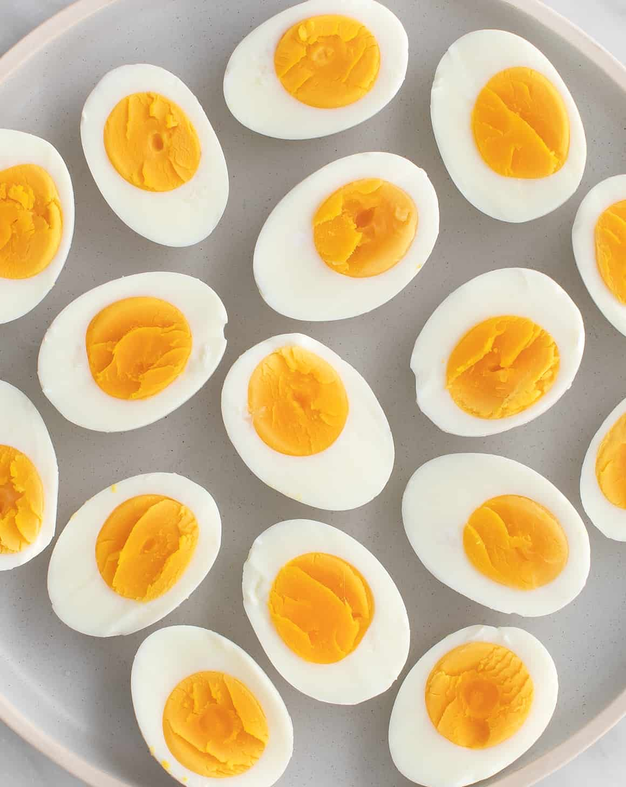

Stuffed Mini Peppers

Description
Learn how to make hard boiled eggs perfectly every time! With this easy method, they'll be easy to peel and have vibrant yellow yolks.
Ingredients
Steps
- Place eggs in a medium pot and cover with cold water by 1 inch. Bring to a boil, then cover the pot and turn off the heat. Let the eggs cook, covered, for 9 to 12 minutes, depending on your desired done-ness.
- Transfer the eggs to a bowl of ice water and chill for 14 minutes. This makes the eggs easier to peel. Peel and enjoy!